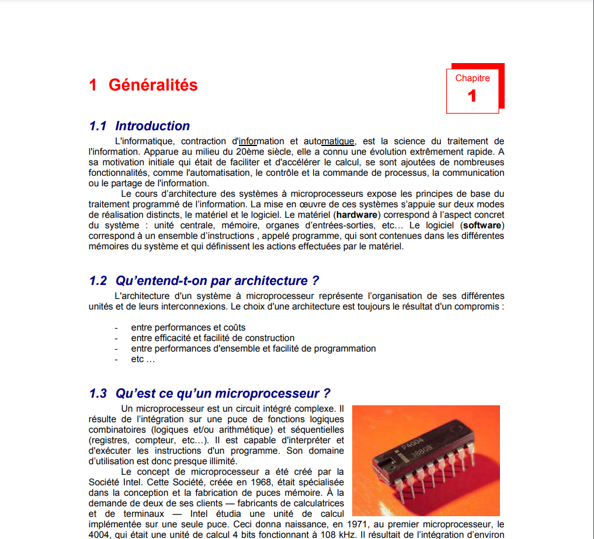
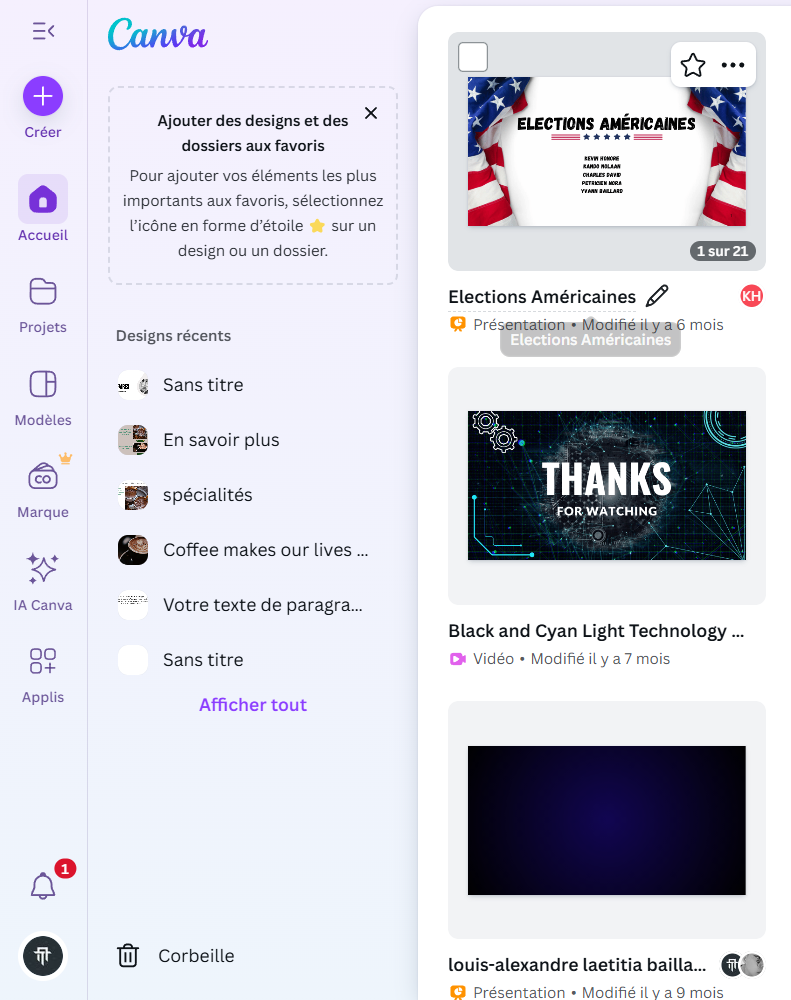
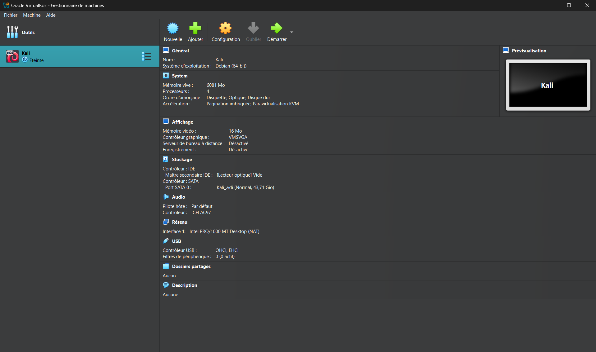
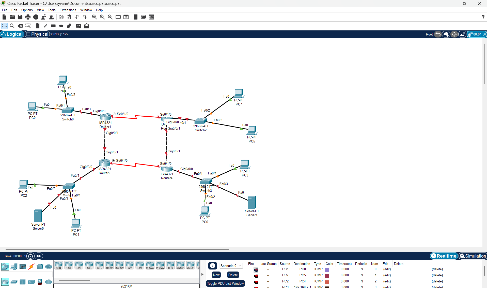
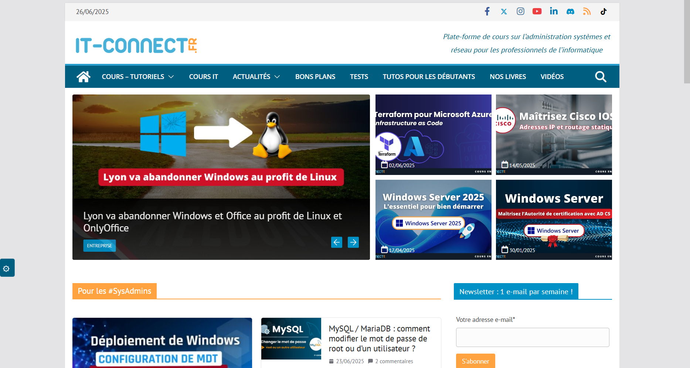

← Retour en arrière
Installer et configurer un poste de travail : administrer des systèmes informatiques communicants complexes
Installer et configurer un poste de travail : administrer des systèmes informatiques communicants complexes
Identifier les différents composants (matériels et logiciel d'un système numérique)
Reconnaître et comprendre le rôle des composants matériels (processeur, mémoire, disque, etc.) et logiciels (système d'exploitation, applications) d'un ordinateur ou d'un système numérique.

Exemple d'identification et de compréhension des composants matériels et logiciels d'un système numérique.
Utiliser les fonctionnalités de base d'un système multitâches / multiutilisateurs
Savoir utiliser les fonctions essentielles d'un système d'exploitation moderne, gérer plusieurs tâches et utilisateurs simultanément.

Exemple d'utilisation des fonctions essentielles d'un système d'exploitation moderne pour la gestion multitâche et multiutilisateur.
Installer et configurer un système d'exploitation et des outils de développement
Être capable d'installer un OS (Windows, Linux, etc.), de le configurer et d'installer les outils nécessaires au développement logiciel.

Exemple d'installation et de configuration d'une machine virtuelle Kali Linux avec les outils de développement nécessaires.
Configurer un poste de travail dans un réseau d'entreprise
Paramétrer un poste pour qu'il fonctionne dans un environnement réseau professionnel (accès aux ressources, sécurité, etc.).

Exemple de configuration d'un poste de travail dans un réseau d'entreprise avec accès aux ressources et sécurité.
Assurer une veille technologique
Se tenir informé des évolutions technologiques et des nouveautés dans le domaine informatique afin d'adapter ses compétences et ses pratiques professionnelles.

Exemple de veille technologique réalisée pour suivre les dernières tendances du secteur.